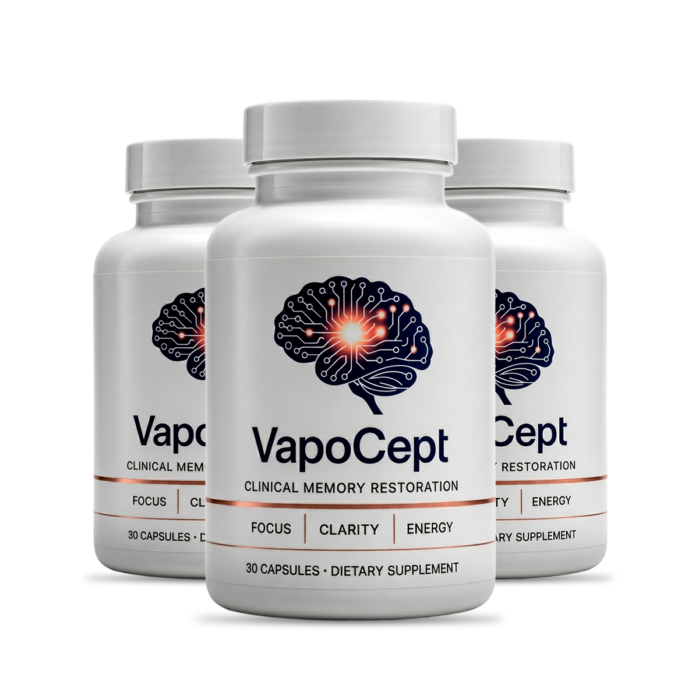

Forgetting Names And Faces? What May Be Behind Everyday Memory Slips After 50
Millions of Britons over 50 notice their memory slipping. Most blame age. But researchers now point to something far more specific, and it has nothing to do with getting old.
It starts small. You walk into a room and forget why you went there. A name sits on the tip of your tongue but refuses to come out. You set your keys down and ten minutes later have no idea where they are.
Most people laugh it off. "I'm just getting older," they say. And for years, that was the accepted answer.
But a growing body of research suggests that age alone does not explain these lapses. Something else may be going on, and it is something you can actually do something about.
What researchers keep pointing to
The brain is a hungry organ. It weighs roughly 2% of your body, yet it consumes about 20% of the oxygen in your blood. Every thought, every memory, every word you recall depends on a steady stream of blood reaching your brain cells at the right moment.
Here is the problem: as we get older, that blood flow tends to slow down. The blood vessels that feed the brain become less flexible. The body produces less of a molecule called nitric oxide, which is what keeps those vessels relaxed and open.
When blood flow drops, your brain cells receive less oxygen and fewer nutrients. The result? Slower recall, foggy thinking, and those frustrating "what was I just doing?" moments that seem to come out of nowhere.
This is not about disease. This is about supply and demand. Your brain still needs the same amount of fuel it always did, but the delivery system is not keeping up.
Why this matters more than most people think
The tricky part is that reduced blood flow to the brain does not announce itself. There is no pain. No warning sign. You simply start forgetting things a little more often, thinking a little more slowly, losing focus a little more easily.
Most people put up with it for months or even years before they stop and ask: is there anything I can actually do?
The answer, according to researchers, is yes. And it starts with the basics.
Five things that support healthy blood flow to the brain
- Move your body every day. Even a 30-minute walk makes a measurable difference in circulation.
- Protect your sleep. Your brain clears waste products during deep sleep. Without enough rest, that process slows down.
- Eat foods rich in nitrates. Beetroot, spinach, rocket and dark leafy greens help the body produce nitric oxide naturally.
- Stay mentally active. Reading, conversation, puzzles. Anything that makes your brain work keeps the connections alive.
- Watch your blood pressure. High blood pressure damages the small vessels that feed the brain. Regular check-ups with your GP matter.
These habits are simple, free, and backed by decades of evidence. But for some people, they are not quite enough on their own.
The ingredient scientists are paying attention to
L-Arginine is an amino acid your body uses to produce nitric oxide. You get some of it from food, especially red meat, fish and nuts. But as you age, your body becomes less efficient at converting it.
L-Citrulline is another amino acid that works alongside L-Arginine. Your body converts L-Citrulline into L-Arginine, which then supports nitric oxide production. Together, they create a cycle that helps keep blood vessels relaxed and blood flowing.
This is basic biochemistry, not a miracle claim. These amino acids are well-studied, widely available, and recognised in nutritional science. The question for most people over 50 is simply whether they are getting enough of them.
VapoCept: a supplement built around these ingredients

VapoCept is a food supplement that combines L-Arginine, L-Arginine AKG, L-Citrulline HCL, L-Citrulline Malate, Niacin (vitamin B3) and Beta-Alanine in a single daily capsule.
These are the same amino acids and nutrients discussed above. VapoCept brings them together in one formula designed to support healthy circulation as part of a balanced lifestyle.
It is made in the USA in a GMP-compliant facility, is non-GMO, and uses 100% natural ingredients.
Important: VapoCept is a food supplement. It is not a medicine and is not intended to diagnose, treat, cure or prevent any condition. It works best alongside the healthy habits listed above, not as a replacement for them.
The manufacturer offers a 60-day money-back guarantee, subject to the terms on the official website. That means you can try it, and if you are not satisfied, you can request a full refund within 60 days.
You will be taken to the official product page. Please read the product information and terms there before ordering.
Why are so many people searching for this?
Memory supplements are one of the most searched categories in the UK for adults over 50. Most contain a long list of plant extracts with little evidence behind them. VapoCept takes a different approach, focusing on amino acids the body already uses to produce nitric oxide and support blood flow. Whether that approach is right for you is a personal decision, but the science behind the ingredients is well-documented.
Common questions
Is VapoCept a medicine?
No. It is a food supplement and does not replace medical advice, diagnosis or treatment.
Can I take it with my regular medication?
If you take prescription medication or have a health condition, speak to your GP or pharmacist before starting any supplement.
How long before I notice anything?
Individual experiences vary. The manufacturer suggests giving it at least 30 days as part of a consistent daily routine. Results are not guaranteed.
Is there a money-back guarantee?
Yes. The manufacturer offers a 60-day money-back guarantee. Details and conditions are on the official website.
Where can I buy it?
Through the official website only, using the button on this page. It is not available in shops.
Sponsored link. Individual results may vary.
This page is an advertisement and is not an independent news article or medical advice. The information is for general education only. Food supplements should not be used as a substitute for a varied diet. Do not exceed the recommended daily intake. Consult a healthcare professional if you are pregnant, nursing, taking medication or have a medical condition.